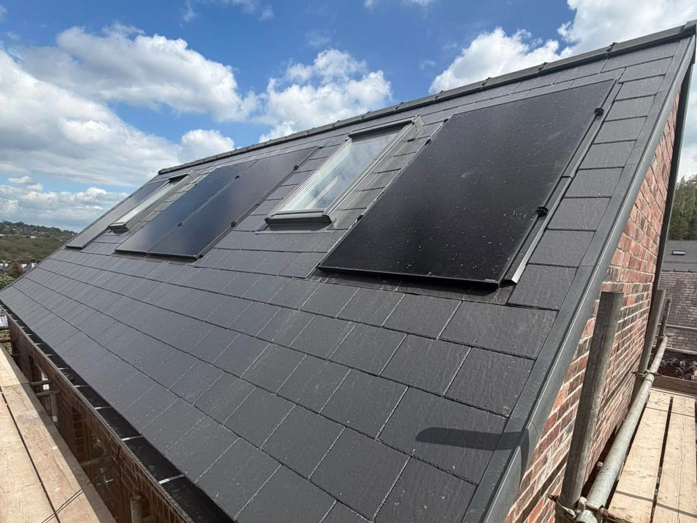

About E Stewart Roofing
Family-run, over 19 years on the tools, covering Glasgow and Ayrshire.
In short
E Stewart Roofing Ltd is a family-run roofing company with over 19 years of experience, run by Ewan Stewart with a team of 6, covering Glasgow, Kilmarnock, Ayr, Troon, Irvine, Prestwick, Cumnock, East Kilbride, Paisley and the surrounding areas. Work ranges from small repairs and maintenance through to complete new roofs, flat roofing, leadwork and roughcasting. The company is insured, work is guaranteed up to 20 years, and quotes are free on 07464 695657.

Meet the owner
I am Ewan Stewart, owner of E Stewart Roofing Ltd. I work alongside a trusted, experienced team including our main roofers Jamie, Stuart and Richard, along with our joiners Paul and Tony. Together we cover all aspects of roofing and joinery, with every member of the team focused on quality workmanship, reliability and keeping our customers happy.
Ewan Stewart, Owner
The team
There are 6 of us, and everyone on the list below is on the tools.
Having two joiners on the team matters more than it sounds. When a roof comes off and the timbers underneath turn out to be rotten, the structural work is handled in house rather than the job stopping while another trade is found.
What sets us apart
What sets E Stewart Roofing Ltd apart is attention to detail, honest advice and a commitment to doing every job properly. We do not believe in cutting corners. From small repairs to complete roof replacements, every project is completed to a high standard using quality materials, with clear communication from start to finish. As a local Glasgow and Ayrshire company, our reputation matters to us and customer satisfaction is always our priority.
How we work
The process is the same whether it is one slipped slate or a full re-roof.
- Someone comes and looks at the roof properly, inside the loft as well as outside
- You get told what is actually wrong, and whether it needs repairing or replacing
- A free quote, with no obligation and no pressure to decide on the spot
- Work is photographed as it goes, so you can see the parts you cannot get to
- Site is left clear at the end of the job
- Fully insured throughout, and the finished job is guaranteed by the company
Why the photos matter
Every photograph and video on this website is from a job carried out by E Stewart Roofing Ltd. There is no stock photography anywhere on the site. Roofing is one of the few trades where the customer cannot see most of the work, so being able to show the job as it went is worth more than any amount of marketing copy.
Insurance and guarantees
E Stewart Roofing Ltd carries public liability insurance, and the cover level is confirmed in writing on request before work starts. Depending on the job, work is guaranteed up to 20 years. What applies to your job is set out in writing with the quote, because a full re-roof and a single slate repair are not the same thing.
Want to talk it through?
Call 07464 695657 and speak to the person who will be doing the work.
Frequently asked questions
Who are E Stewart Roofing Ltd?
E Stewart Roofing Ltd is a family-run roofing company with over 19 years of experience, working across Glasgow and Ayrshire. It is run by Ewan Stewart and covers everything from small repairs and maintenance to complete new roofs, flat roofing, leadwork and roughcasting.
Who is on the team?
There are 6 of us: Ewan Stewart who owns the company, main roofers Jamie, Stuart and Richard, and joiners Paul and Tony. Having joiners on the team means structural timber work is handled in house rather than waiting on another trade.
Are you insured?
Yes. E Stewart Roofing Ltd carries public liability insurance, and the cover level is confirmed in writing on request before work starts.
Is your work guaranteed?
Yes. Depending on the job, work is guaranteed for up to 20 years. What applies to your job is confirmed in writing with the quote, because a full re-roof and a single slate repair are not the same thing.